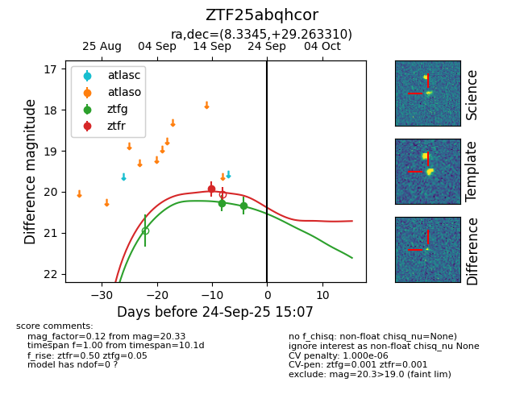
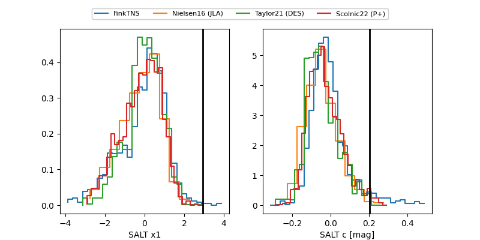

FINK: ZTF25abqhcor
Lasair: ZTF25abqhcor
ALeRCE: ZTF25abqhcor
ZTF25abqhcor (ztf,fink)
equatorial (ra, dec) = (8.3345,+29.26331)
galactic (l, b) = (118.2007,-33.44211)


last ztfg=20.33, ztfr=19.93
2 ztfg, 1 ztfr detections